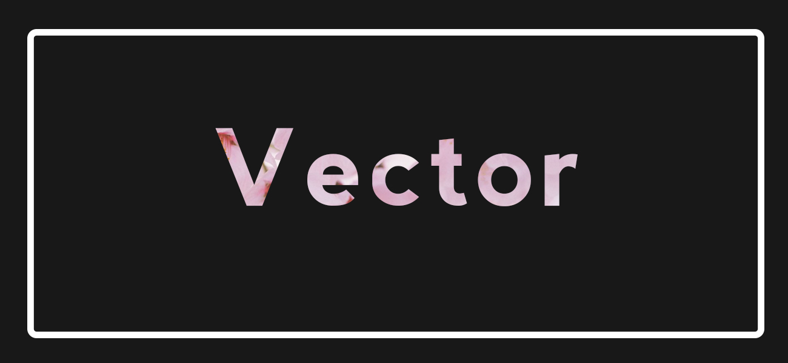
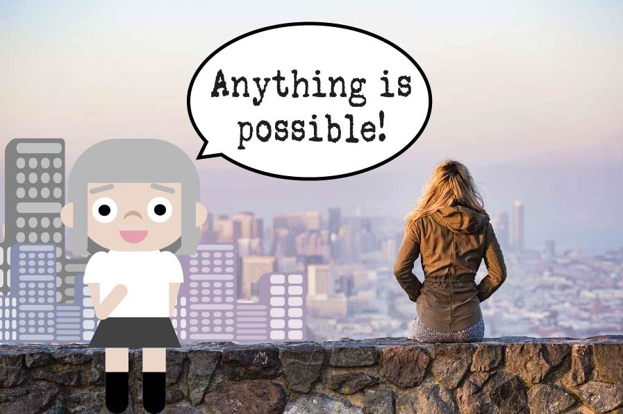

Home | Raster | Vector | Time Base Media | Print Layout | Social Media

This is my final project for my Illustrator Vector assignment. When I had first started this prject I wasn't exactly sure how I had wanted to proceed with it, I didn't go with my original idea as planned but I kept changing it as I went through the project, and I'll admit that I am somewhat satisfied with the final results. I had trouble with using pen tool and crating organic shapes because I did not like the way came out whenever I did it so I had just resorted to using the shape tool to create my character. My inspiration for creating this project was to have a motivational and inspiring message from me(my cartoon self) to myself.